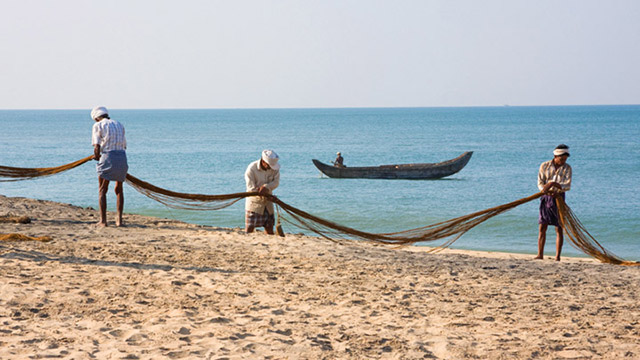

Bekal Fort
The 300 years old defensive mechanism which is the largest and
well-preserved fort makes it one of the best Kasaragod tourist place. You can get an
enthralling view of the mesmerizing Arabian sea from the fort’s observation tower
which was once used to fire the cannons!.It is half hour away from south of Kasaragod at
a distance of 16 kilometers.
1 / 3

2 / 3

Valiyaparamba Beach
Valiyaparamba is a scenic island in the Arabian Sea in Kasaragod district of Kerala with unspoilt empty golden sand beach and one of the most beautiful backwater stretches in Kerala. Valiyaparamba is fed by four rivers and dotted with many small islands. One of the few places where you can witness both the glory of the sun rising and the sun setting.
Valiyaparamba is a scenic island in the Arabian Sea in Kasaragod district of Kerala with unspoilt empty golden sand beach and one of the most beautiful backwater stretches in Kerala. Valiyaparamba is fed by four rivers and dotted with many small islands. One of the few places where you can witness both the glory of the sun rising and the sun setting.
3 / 3

Anandhapura Lake Temple
As the name suggests, Ananthapura Lake Temple is located in the middle of a lake in the village of Ananthapura. It is an ancient temple believed to have been built in the 9th century. It is the only lake temple in Kerala and is known as the moolasthanam (the original abode) of Lord Padmanabha of Sree Padmanabhaswamy temple of Thiruvananthapuram.
As the name suggests, Ananthapura Lake Temple is located in the middle of a lake in the village of Ananthapura. It is an ancient temple believed to have been built in the 9th century. It is the only lake temple in Kerala and is known as the moolasthanam (the original abode) of Lord Padmanabha of Sree Padmanabhaswamy temple of Thiruvananthapuram.